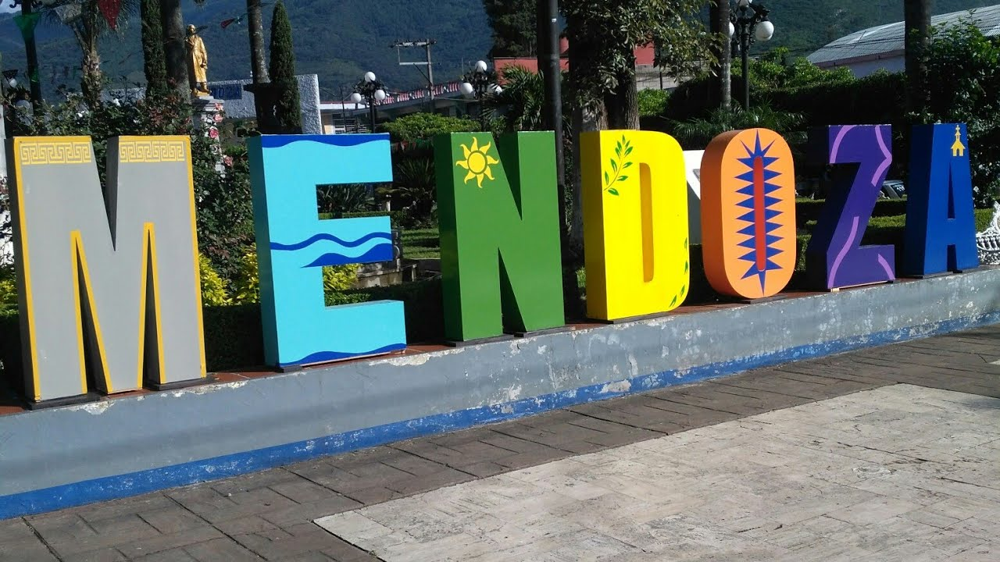

Un Destino Lleno de Historia, Naturaleza y Cultura
¡Un Paraíso Escondido en las Altas Montañas!
Ubicada en el corazón de la sierra veracruzana, Ciudad Mendoza es un destino ideal para los amantes de la naturaleza, la historia y la cultura. Con su clima fresco, paisajes montañosos y rica tradición, este es el lugar perfecto para escapar de la rutina y disfrutar de experiencias inolvidables.
¿Por qué Visitar Ciudad Mendoza?
- Paisajes Naturales Impresionantes: Ríos, montañas y bosques que invitan a la aventura.
- Historia y Cultura Viva: Conoce su pasado industrial y su relevancia en la historia de México.
- Eventos Tradicionales: Vive sus festivales, ferias y celebraciones llenas de folclore.
- Gastronomía Única: Prueba los sabores auténticos de la región.
Vive una Experiencia Única
Imagina despertar con el aire puro de la montaña, recorrer senderos entre bosques y descubrir cascadas ocultas. Sumérgete en la calidez de su gente y llévate recuerdos imborrables de este mágico lugar.
¡Planifica Tu Viaje Hoy!
No esperes más para conocer este tesoro de Veracruz.
- Reserva tu hospedaje ahora
- Consulta nuestra guía de actividades
- Descubre cómo llegar